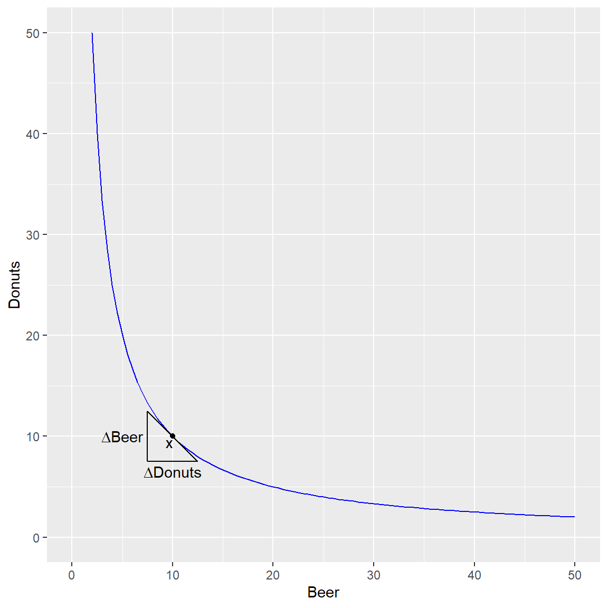
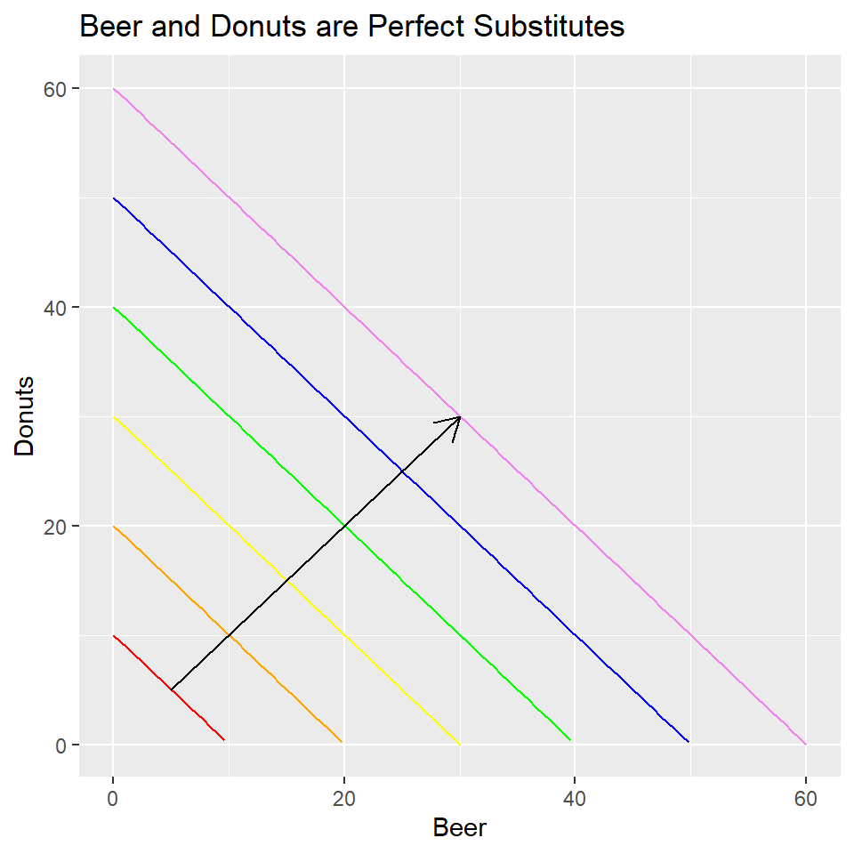

Preferences
Definition
A consumer’s preferences are a subjective set of orderings over combinations of goods and services.
We can describe two combinations of goods and services (A and B) in three different ways:
- The consumer strictly prefers A to B (\(A \succ B\)) means that A is better than B.
- The consumer weakly prefers A to B (\(A \succsim B\)) means that A is at least as good as B.
- The consumer is indifferent between A and B (\(A \sim B\)) means that A and B are equally satisfying.
Assumed Properties
We usually assume that preferences follow three basic axioms:
- Completeness - the consumer is aware of all of the possible consumption bundles and knows which are preferred to which;
- Montonicity - more is better;
- Transitivity (\(A \succsim B\) and \(B \succsim C\) implies \(A \succsim C\)) - a bundle (A) cannot be preferred by a bundle (C) that is preferred by a bundle (B) that the original bundle is preferred to.
When we represent preferences by a utility function and graph them using indifference curves we typically add a couple of more assumptions:
- Continuity;
- Convexity - love of variety (consumers prefer a weighted average of A and B to A or B by themselves).
Indifference Curves
Graphs of Indifference Curves
Run the following code to plot indifference curves for succssive levels of satisfaction.
curve(
100 / x,
from = 1,
to = 100,
xlim = c(0, 50),
ylim = c(0, 50),
col = 'red',
xlab = 'Donuts',
ylab = 'Beer'
)
curve(
200 / x,
from = 1,
to = 100,
col = 'orange',
add = TRUE
)
curve(
300 / x,
from = 1,
to = 100,
col = 'yellow',
add = TRUE
)
curve(
400 / x,
from = 1,
to = 100,
col = 'green',
add = TRUE
)
curve(
500 / x,
from = 1,
to = 100,
col = 'blue',
add = TRUE
)
curve(
600 / x,
from = 1,
to = 100,
col = 'violet',
add = TRUE
)
arrows(
x0 = 10,
x1 = 25,
y0 = 10,
y1 = 25,
col = 'black'
)curve(
100 / x,
from = 1,
to = 100,
xlim = c(0, 50),
ylim = c(0, 50),
col = 'red',
xlab = 'Donuts',
ylab = 'Beer'
)
curve(
200 / x,
from = 1,
to = 100,
col = 'orange',
add = TRUE
)
curve(
300 / x,
from = 1,
to = 100,
col = 'yellow',
add = TRUE
)
curve(
400 / x,
from = 1,
to = 100,
col = 'green',
add = TRUE
)
curve(
500 / x,
from = 1,
to = 100,
col = 'blue',
add = TRUE
)
curve(
600 / x,
from = 1,
to = 100,
col = 'violet',
add = TRUE
)
arrows(
x0 = 10,
x1 = 25,
y0 = 10,
y1 = 25,
col = 'black'
)For each different-colored curve above , the consumer whose preferences they describe is indifferent between any two points on the same curve: they like all of these points equally.
The Preferred Set
This set of points that a consumer strictly prefers to any bundle, \(x\) is sometimes called the (strictly) preferred set, \(P(x)\). The preferred set lies to the top-left of \(x\). The boundary of the strictly preferred set - which is not included in the set - is the indifference curve on which \(x\) lies. The set that includes bundles that a consumer weakly prefers to \(x\) is called the weakly preferred set and includes the strictly preferred set as well as the indifference curve on which \(x\) lies.

Click here to see the code for the graph.
x = seq(1, 55, 0.01) u_0 = 100/x
top = 55 + 0*x
plot(x, u_0, type = 'l', xlim = c(0, 50), ylim = c(0, 50),
  xlab = 'Donuts', ylab = 'Beer', col = 'red')
polygon(x=c(x, rev(x)), y = c(top, rev(u_0)), col = 'pink', lty = 0)
lines(x, u_0, type = 'l', xlim = c(0, 50), ylim = c(0, 50), col = 'red')
points(x = 10, y = 10, pch = 20)
text(x = 9.5, y = 9.5, "x")
text(x = 20, y = 20, "P(x)\n(Preferred Set to x)")Properties of Indifference Curves
Based on the preference axioms introduced earlier, we can derive three properties for indifference curves.
- Indifference curves slope downward (monotonicity - more is better);
- Indifference curves do not cross (transitivity - preferences are consistent);
- Indifference curves are bowed inward (convexity - love of variety).
Marginal Rate of Substitution (MRS)
At any point along an indifference curve, the slope of the curve represents the consumer’s willingness to trade one good for the other and remain equally happy (indifferent).
Click here to see the code for the graph.
plot(x, u_0, type = 'l', xlim = c(0, 50), ylim = c(0, 50),
  xlab = 'Donuts', ylab = 'Beer', col = 'red')
points(x = 10, y = 10, pch = 20)
segments(x0 = 7.5, x1 = 12.5, y0 = 12.5, y1 = 7.5)
segments(x0 = 7.5, x1 = 7.5, y0 = 12.5, y1 = 7.5)
segments(x0 = 7.5, x1 = 12.5, y0 = 7.5, y1 = 7.5)
text(x = 9.5, y = 9.5, "x")
text(x = 5.5, y = 10, expression(paste(Delta, "Beer")))
text(x = 10, y = 6.5, expression(paste(Delta, "Donuts")))This willingness to trade off one good for another is called the marginal rate of substitution.
Special Cases
Perfect Substitutes

Click here to see the code for the graph.
curve(10 - x, from=0, to=10, xlim=c(0, 60), ylim=c(0, 60), col='red',
  xlab='Donuts', ylab='Beer', main='Beer and Donuts are Perfect Substitutes')
curve(20 - x, from=0, to=20, col='orange', add=TRUE)
curve(30 - x, from=0, to=30, col='yellow', add=TRUE)
curve(40 - x, from=0, to=30, col='green', add=TRUE)
curve(50 - x, from=0, to=30, col='blue', add=TRUE)
curve(60 - x, from=0, to=30, col='violet', add=TRUE)
arrows(x0=5, x1=30, y0=5, y1=30, col='black')Perfect Complements

Click here to see the code for the graph.
plot(x=c(rep(10, 11)), y=c(seq(10, 80, 7)), type='l', xlim=c(0, 80), ylim=c(0, 80), col='red',
  xlab='Donuts', ylab='Beer', main='Beer and Donuts are Perfect Complements')
segments(x0=10, x1=80, y0=10, y1=10, col='red')
segments(x0=20, x1=20, y0=20, y1=80, col='orange')
segments(x0=20, x1=80, y0=20, y1=20, col='orange')
segments(x0=30, x1=30, y0=30, y1=80, col='yellow')
segments(x0=30, x1=80, y0=30, y1=30, col='yellow')
segments(x0=40, x1=40, y0=40, y1=80, col='green')
segments(x0=40, x1=80, y0=40, y1=40, col='green')
segments(x0=50, x1=50, y0=50, y1=80, col='blue')
segments(x0=50, x1=80, y0=50, y1=50, col='blue')
segments(x0=60, x1=60, y0=60, y1=80, col='violet')
segments(x0=60, x1=80, y0=60, y1=60, col='violet')
arrows(x0=10, x1=60, y0=10, y1=60, col='black')Neutral Goods


Click here to see the code for the graph.
plot(x=c(rep(10, 11)), y=c(seq(0, 60, 6)), type='l', xlim=c(0, 60), ylim=c(0, 60), col='red',
  xlab='Donuts', ylab='Non-Alcoholic Beer', main='Non-Alcoholic Beer is a Neutral Good')
segments(x0=20, x1=20, y0=0, y1=60, col='orange')
segments(x0=30, x1=30, y0=0, y1=60, col='yellow')
segments(x0=40, x1=40, y0=0, y1=60, col='green')
segments(x0=50, x1=50, y0=0, y1=60, col='blue')
segments(x0=60, x1=60, y0=0, y1=60, col='violet')
arrows(x0=10, x1=60, y0=30, y1=30)Economic Bads

Click here to see the code for the graph.
plot(x=c(seq(10, 20, 1)), y=c(seq(0, 70, 7)), type='l', xlim=c(0, 70), ylim=c(0, 70),
  col='red', xlab='Donuts', ylab='Pants', main='Pants as an Economic Bad')
segments(x0=20, x1=30, y0=0, y1=70, col='orange')
segments(x0=30, x1=40, y0=0, y1=70, col='yellow')
segments(x0=40, x1=50, y0=0, y1=70, col='green')
segments(x0=50, x1=60, y0=0, y1=70, col='blue')
segments(x0=60, x1=70, y0=0, y1=70, col='violet')
arrows(x0=10, x1=70, y0=40, y1=30)